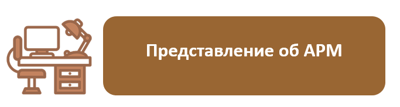

Содержание

Тема 1.1. Автоматизированное рабочее
место
Тема 1.2. Основные функции АРМ. Классификация
АРМ
Тема 1.3. Техническое обеспечение АРМ
Тема 1.4. Программное обеспечение АРМ
Тема 1.5. Практическое занятие
Тема 2.1. Представление об АРМ
учителя
Тема 2.2. Практическое занятие
Тема 3.1. Представление об АРМ
врача
Тема 3.2. Практическое
занятие
Тема 4.1. Представление об АРМ
библиотекаря
Тема 4.2. Практическое
занятие
Модуль 5. АРМ продавца
(кассира)
Тема 5.1. Представление об АРМ
кассира